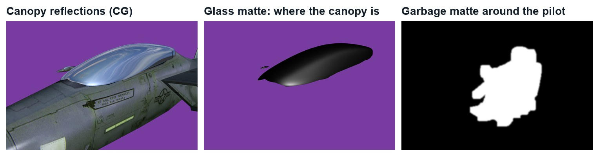
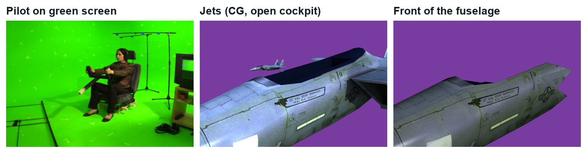
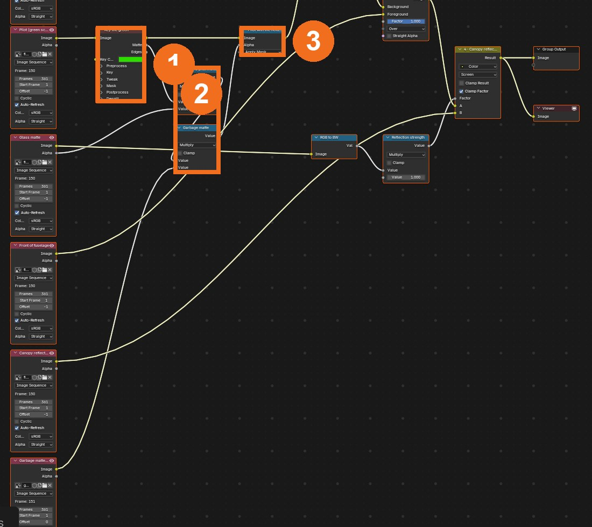
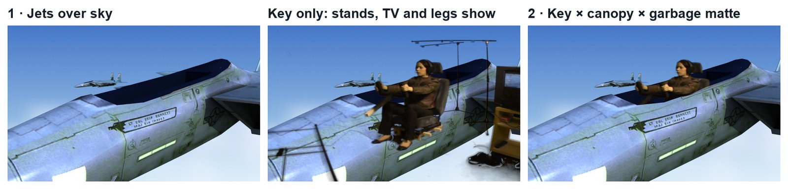
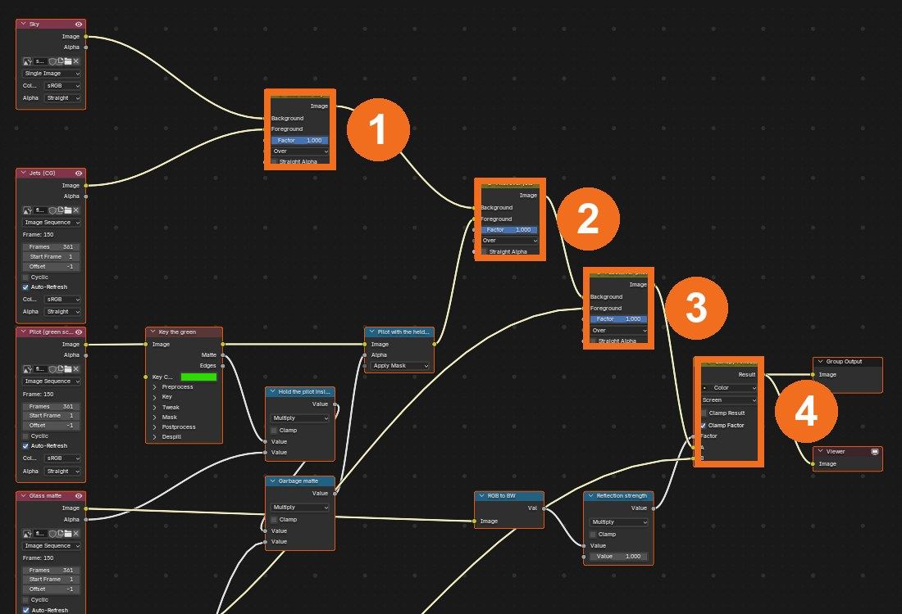
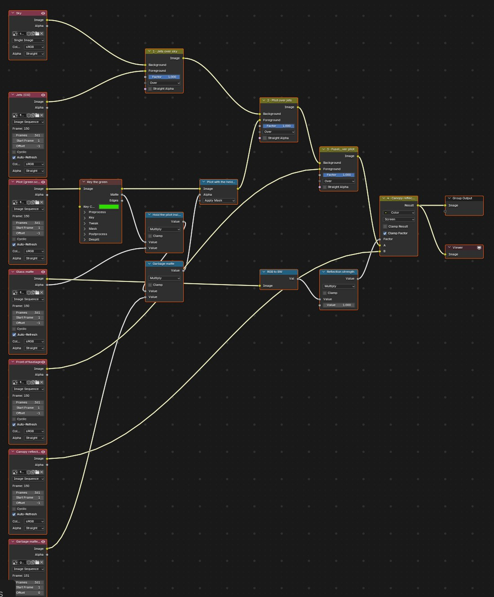
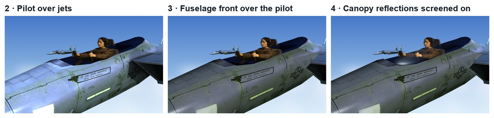
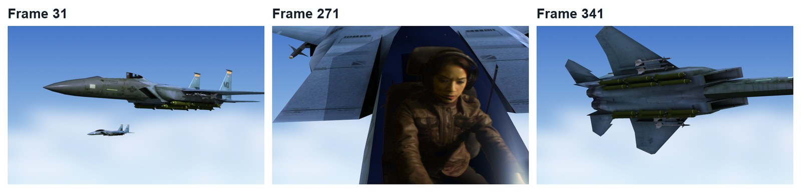

Key a pilot off a green screen and seat her inside a CG jet using layers, mattes and reflections, all in Blender’s compositor.
5 illustrated stagesOne lessonKeying · hold-out and garbage mattes · layer order · reflectionsPractice plates: Hollywood Camera Work
The demo composite, made in Blender’s compositor with this tutorial’s steps. Plates and CG layers: Hollywood Camera Work.
Key. Hold. Stack.
Seven layers, one shot. Do Dinosaur Chase first if Alpha Over is new to you.
My supports
Turn on any help you want. Your teacher may have set some for you. They change how the guide helps, not what is assessed.
Shot brief
Seat the pilot in the jet.
You are given green-screen footage of a pilot and a CG jet in separate layers. Deliver a composite where she sits inside the cockpit under the canopy, then a change of the director’s choosing.
You will hand in
A screenshot of your node tree
The finished shot as an MP4
The director’s change, with a three-sentence explanation
Credits for the plate and the method
Footage and credits
The plate is from Hollywood Camera Work. You may use it and post your results with credit, but do not re-upload the plate itself. The CG layers were made by Hollywood Camera Work to match the footage.
On a film, the tracking and 3D departments hand the compositor separate layers. The compositor is the last artist to touch the shot and is responsible for whether the audience believes it.
Knowledge first
Why this works.
Layers and depth order
Each element is its own image sequence. Stacking them back to front with Alpha Over creates depth.
Mattes multiply
A key matte, a CG matte and a hand-drawn mask can be multiplied together: the pilot survives only where all three are white.
Premultiplied alpha
Keyed images carry colour already multiplied by alpha. Use Apply Mask, not Replace Alpha, when you shrink the matte.
Design principles in the shot
Depth: overlapping layers. Emphasis: the pilot’s face in the close-up. Unity: one sky colour reflected in the canopy.
Primary achievement evidence: the director’s change (step 5). Guided steps and supports are recorded separately from achievement. Shot-library option in sprint mm12-26-s08. The registry has no VFX skill IDs yet; see the animation skills proposal.
Session A · Lesson 1 · VFX shot library
Put a pilot in a jet, layer by layer.
A studio has shot a pilot on green screen and rendered a jet in separate layers. You assemble them in the right order.
TODAYLoad the layers (15 min), key and hold the pilot (20 min), stack the layers (15 min), director’s change (15 min).
01
Load the layers and work out the order
IN SHORTDownload; set output; load each layer and a sky; view; write the order.
READ ALOUD
DOCUMENT: Hollywood Camera Work F15 set: Image Plane, Fighter Jets, Front Matte, Glass, Glass Matte SELECT: Compositing workspace TOOLS / ROUTE: Add › Input › Image · Image Sequence · Auto-Refresh
Download the F15 layers from Hollywood Camera Work (Image Plane, Fighter Jets, Front Matte, Glass, Glass Matte) and unzip them into your project folder.
New file. Output: 720 × 486, Aspect X 10 and Y 11, 30 fps, frames 1–361.
Compositing workspace. Add an Image node for each layer (first frame; Frames 361; Auto-Refresh). Add a sky picture of your own as one more Image node.
View each layer. On paper, put them in order from furthest to nearest: sky, jets, pilot, front of the fuselage, canopy glass.
Notice the Image Plane is the green-screen footage already placed in the 3D camera, so it lines up with the jet.
The demo composite (real Blender render, 12 seconds). Plates: Hollywood Camera Work.

The canopy reflections, the glass matte, and the garbage matte made for the demo.
STEP CHECKLIST
GLOSSARY
Layer: One element of a shot on its own image sequence
Depth order: What is in front of what

Real frames (frame 151, shown over purple where transparent): the pilot footage, the jets, and the front of the fuselage.
WHYBig shots are delivered as layers so a compositor can put real and CG elements in depth order and adjust each one.
CHECKAll layers loaded in sync and a written back-to-front order.
FIXA layer shows one frame only? Set Frames to 361 and tick Auto-Refresh.
WORKED EXAMPLE · DIFFERENT OBJECTThe demo sky is a simple gradient with soft clouds, painted for this guide.
STRETCH (AFTER THE CHECK PASSES)Photograph your own sky for the background.
Method basis: H1 · B5. Values and sequence are authored for this project.
02
Key the pilot
IN SHORTKeying node; pick the green; Black and White levels; Alpha Over; note the leftovers.
READ ALOUD
DOCUMENT: Your node tree SELECT: Keying node on the Image Plane layer TOOLS / ROUTE: Add › Keying › Keying · Key Color eyedropper · Black Level · White Level
Add a Keying node after the Image Plane layer.
Click Key Color, use the eyedropper, and pick the green near the pilot.
View the Matte output. Raise Black Level until the screen is black (about 0.35); lower White Level until the pilot is solid white (about 0.75).
Alpha Over the keyed pilot on the jets. The pilot appears, and so do the light stands, the monitor and her legs hanging below the jet.
That is normal: a key removes green, not unwanted objects.
Click by click (real Blender screenshots)

The demo tree: the Keying node (1), the two Math (Multiply) nodes that hold the matte (2), and Set Alpha with Apply Mask (3).
STEP CHECKLIST
GLOSSARY
Key: Removing a colour to make it transparent
Matte: The black-and-white image that says what is visible

Real renders at frame 151: jets over sky; the keyed pilot with stands, monitor and legs still showing; and the fixed version.
WHYThe keyer only knows colour. Everything on set that is not green survives the key, so the next step removes it.
CHECKA clean matte of the pilot (black screen, white pilot) and a list of what still needs removing.
FIXGrey patches in the screen? Raise Black Level. Holes in the pilot? Lower White Level.
WORKED EXAMPLE · DIFFERENT OBJECTDemo settings: Black Level 0.35, White Level 0.75.
STRETCH (AFTER THE CHECK PASSES)Use the Keying node’s Despill to remove green on her jacket.
Method basis: B6. Values and sequence are authored for this project.
03
Hold the pilot inside the canopy and remove the garbage
IN SHORTKey matte × glass matte alpha × hand mask; Set Alpha Apply Mask; check.
READ ALOUD
DOCUMENT: Your node tree SELECT: Math (Multiply) nodes, a mask, Set Alpha TOOLS / ROUTE: Converter › Math › Multiply · Mask editor · Converter › Set Alpha (Apply Mask)
Multiply the key’s Matte by the Glass Matte layer’s Alpha with a Math node: the pilot now only exists where the canopy is.
The monitor and a stand are still inside that area. Draw a mask around the pilot and seat (Image Editor › Mask mode), keyframe it every 20 frames or so as the camera moves, and add a Mask node.
Multiply by the mask with a second Math node.
Use Set Alpha with Type Apply Mask: Image from the Keying node, Alpha from your Math node.
Alpha Over this on the jets. Only the pilot and seat remain.
What went wrong when we built the demo: with Replace Alpha the stands and monitor kept showing as ghosts, because the keyed image is premultiplied. Apply Mask fixed it. Also, the area outside the footage plane is pure black, which the keyer treats as solid: the garbage matte has to exclude it.
STEP CHECKLIST
GLOSSARY
Garbage matte: A rough mask that removes unwanted areas
Hold-out: Using one element’s shape to hide part of another
Real screenshot of the demo tree: key (1), hold and garbage mattes multiplied together (2), applied to the keyed image (3).
WHYMattes multiply: where any one of them is black, the result is black. Combining a key, a CG matte and a hand-drawn mask is everyday compositing.
CHECKA pilot who appears only inside the canopy, with no stands, monitor or loose legs.
FIXGhosts of the stands still show? You used Replace Alpha: switch Set Alpha to Apply Mask.
WORKED EXAMPLE · DIFFERENT OBJECTIn the demo the garbage matte was computed; in class you draw and keyframe it.
STRETCH (AFTER THE CHECK PASSES)Feather the mask so its edge never shows.
Method basis: B6 · B4. Values and sequence are authored for this project.
04
Stack the layers and add the canopy reflections
IN SHORTSky → jets → pilot → fuselage front; Screen the glass through the glass matte; scrub.
READ ALOUD
DOCUMENT: Your node tree SELECT: Three Alpha Over nodes and a Mix (Screen) TOOLS / ROUTE: Color › Alpha Over · Color › Mix › Screen · Converter › RGB to BW
Alpha Over 1: sky as Background, jets as Foreground.
Alpha Over 2: that result as Background, your held pilot as Foreground.
Alpha Over 3: add the Front Matte layer on top. The fuselage now hides her legs and the seat base, so she sits in the jet.
Add a Mix node set to Screen: your result into A, the Glass layer into B, and the Glass Matte (through RGB to BW) into Factor. Reflections appear only on the canopy.
Scrub the whole shot and check the order holds in every frame.
Click by click (real Blender screenshots)

The demo tree: Alpha Over 1 jets over sky (1), 2 pilot over jets (2), 3 fuselage front (3), and the Screen mix for reflections (4).

The whole demo node tree.
STEP CHECKLIST
GLOSSARY
Screen: A blend mode that brightens, used for reflections and light
Alpha Over: Places a foreground with transparency over a background

Real renders at frame 151: pilot over jets, the fuselage front added, then canopy reflections.
WHYDepth comes from order. A piece of the jet in front of the pilot is what makes her look inside it; glass reflections on top complete the illusion.
CHECKA shot where the pilot sits inside the cockpit, behind the fuselage edge and under canopy reflections.
FIXPilot in front of the fuselage? Your Alpha Over order is wrong. Whole frame milky? The Screen factor must come from the Glass Matte, not be left at 1.
WORKED EXAMPLE · DIFFERENT OBJECTThe demo uses the glass matte’s brightness at full strength as the Screen factor.
STRETCH (AFTER THE CHECK PASSES)Tint the canopy slightly green-blue.
Method basis: B5. Values and sequence are authored for this project.
05
Practical check: the director’s change, then render and defend
IN SHORTRead the card; pick the layer; change a copy; render; defend; credit.
READ ALOUD
DOCUMENT: Your composite · the director’s card SELECT: Whatever the card requires TOOLS / ROUTE: Your own decisions
Read your director’s card (below).
Decide which layer or node it touches.
Make the change in a copy of your file and render the shot (FFmpeg, H.264).
Screen it and explain the layer order and one matte decision.
Credit the plates (Hollywood Camera Work) in your evidence.

Three real frames from the finished demo.
Card
The director says
1 · Sunset
“Golden hour: a sunset sky, and warm light on the jets and the pilot.”
2 · Storm
“They are flying into a storm: dark clouds and lightning flashes.”
3 · Night mission
“Night: stars, a dark jet, and a glow from the cockpit instruments on her face.”
4 · Speed
“It feels still. Add motion: streaking clouds and a slight camera shake.”
Independent evidence: the main achievement evidence for this tutorial.
STEP CHECKLIST
GLOSSARY
Grade: The colour treatment of a shot
WHYWith layers, a compositor can change the sky, the light or the mood without re-shooting or re-rendering.
CHECKA changed shot that meets the card, rendered, with an explanation and credits.
FIXStuck? Name the layer the card touches first. (Independent step: the Coach can explain tools but not decide your changes.)
WORKED EXAMPLE · DIFFERENT OBJECTWorked example on a different shot: a “sunset” card needed a new sky image and a warm Multiply over everything else.
STRETCH (AFTER THE CHECK PASSES)Take two cards at once.
Method basis: B5. Values and sequence are authored for this project.
Before you submit
Student QA.
Evidence conversation
Keep it short and specific.
SENTENCE FRAMESAfter the key I still had ___ because ___. · The pilot looks inside the jet because ___. · For the director’s card I changed the ___ layer using ___.
Figures marked Illustration are drawn, not screenshots. Step values are starting points authored for this project. Draft for teacher review; not yet classroom-piloted.